Schnapps is a multi-purpose snapping tool that offers a variety of snapping methods.
The goal of Schnapps is to be incredibly useful in many different situations, super simple to use, but also highly customizable when needed.
While there may be many tools that might do something similar, Schnapps aims to be the most complete and flexible, yet simple to use snapping tool of them all.
How Schnapps works
The 3 primary snapping methods within Schnapps are:
Snap
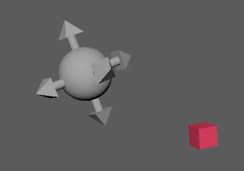
Snap one object or many objects, to a single source object.
Pop Snap
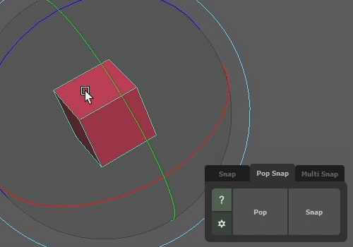
Store the selected object’s translate/rotate/scale values, and whenever you need to, you can snap object(s) to those stored values.
Multi Snap
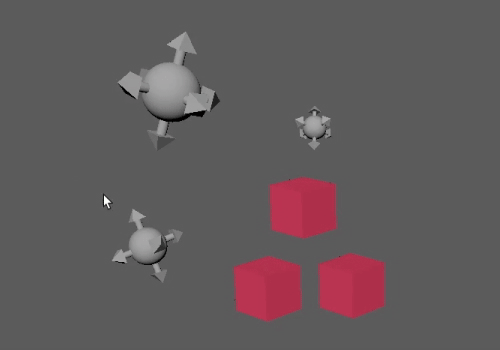
Snap pairs of objects together, I.E. Snap objects in list B to list A.
Each snapping method has options for snapping such as:
- Affect only translate, rotate, scale, or a combination of each.
- Snapping/storing to different transform spaces (world, object, pivot, center of an object, and more).
- Snapping to the surface of a mesh.
- Snapping objects over a highlighted timeline range.
- Snapping to frozen objects
- Storing the approximate translate, rotate, or scale values of a frozen object.
How should I use Schnapps?
Because Schnapps is so multi-purpose and flexible. How you use it is really up to your imagination.
Here are some ideas of how you can use snaps:
- Copy the exact values of one object, and paste it to another.
- Snap over multiple frames, to lock down foot slips on a walk cycle.
- Stamp trees down onto a mesh surface.
- Snap one rig to another (even if the control names are different), using Multi Snap.
- Keep an object’s translate/rotate/scale values stored for when you need it.
Here is the quickest way to get started with Schnapps:
- Switch to the Snap tab.
- Select the source object (the object you want to snap to).
- Shift-select to add objects you want to snap.
- Hit the
Snap button.
That’s it!
For more advanced snapping options, see the help sections for each of the snap methods, Snap, Snap Pop, Multi Snap.
Snap works on what you have selected.
- Select the source object (the object you want to snap to).
- Shift-select to add objects you want to snap.
- Hit the
Snap button.
This will snap all the latter selections, to the first selection.
Snap Settings
Time Based
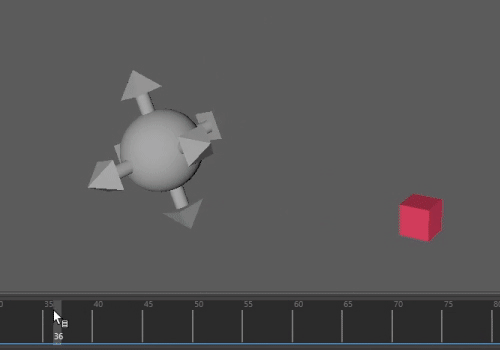
If you have a timeline selection, Schnapps will prompt you to ask whether you want to snap object(s) over time, on the frames you have highlighted.
If you answer Yes, then Schnapps will snap that object(s) on every frame you have highlighted.
This can be useful if you have keyframes on your object(s) and want to lock them down in space for the highlighted range or have them snap to an animated object over the highlighted range.
Translate Rotate Scale Checkboxes
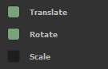
Sets whether you want to snap the translate, rotate, and/or scale of an object.
Defaults:
Translate: On
Rotate: On
Scale: Off
World
Snap subjects to a source object using world space transform values.
Object
Copy and paste the source object’s transform values onto the subjects.
Pivot
Snap subjects to source object using the pivot positions of both.
Useful for when pivot positions are not the same as world space positions.
Center
Snap the center position of the subjects to the center position of the source object.
Mesh
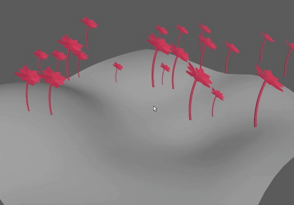
Snap subjects to the surface of the source object’s mesh.
This operation will perform a world space snap for every subject to its closest point to the source object’s mesh.
The source object must be a mesh.
Impossible
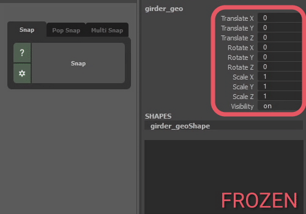
Attempt to do the impossible, and snap subjects to a frozen source object (an object that has had Freeze Transformations applied to it).
This operation is just an approximation. It works best on some-what symmetrical objects.
Pop Snap separates the storing an object’s values, with the snapping of objects.
This means you can store an object’s translate/rotate/scale values. Then whenever you need to, you can snap other objects (or the same object) to those stored values.
- Select an object that you wish to store.
- Hit the
Pop button to store its values.
- Select object(s) that you wish to snap.
- Hit the
Snap button to apply the stored values onto the objects.
Pop Snap is handy if:
- You need to store and snap the same object, without needing to create some temporary locator.
- You want to use different options (world, object, etc.) for storing than and snapping.
- You need to temporarily store a position and recall it later.
- You want to just copy the Channel Box values of an object somewhere (the settings dialog will show you those values).
Pop Snap Settings
Time Based
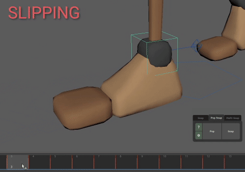
If you have a timeline selection, Schnapps will prompt you to ask whether you want to snap object(s) over time, on the frames you have highlighted.
If you answer Yes, then Schnapps will snap that object(s) on every frame you have highlighted.
This can be useful if you have keyframes on your object(s) and want to lock them down in space for the highlighted range, or have them snap to an animated object over the selcted range.
Translate Rotate Scale Fields
These fields show you the values that are stored.
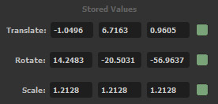
Use the checkboxes at the end to set whether you want to store/snap the translate, rotate, and/or scale of an object.
Defaults:
Translate: On
Rotate: On
Scale: Off
World
Store Method
Store world space transform values of the selected object.
Snap Method
Applies stored values to source object as world space transform values.
Object
Store Method
Store selected object’s transform values seen in the Channel Box.
Snap Method
Paste stored values directly onto selected objects’ translate/rotate/scale attributes.
Pivot
Store Method
Store pivot positions of the selected object.
Snap Method
Snap selected objects to stored values using the pivot positions as the anchor point.
These operations are useful for when pivot positions are not the same as world space positions.
Center
Store Method
Store the center position of the selected object.
The center position is a similar position to if you were to perform Center Pivot.
Snap Method
Snap the center position of selected objects to stored values.
Impossible
Store Method
Attempt to do the impossible, and store selected frozen* object’s transforms.
Snap Method
Attempt to do the impossible and snap selected frozen* objects to the stored values.
*An object that has had Freeze Transformations applied to it
These operations are just an approximation. They work best on some-what symmetrical objects.
Multi Snap is useful for snapping pairs of objects together.
Imagine you have one list of objects that you want to snap to another list of objects. Multi snap does just this.
- Select all your source objects.
- Hit the
Load A button.
- Select all the objects you wish to snap to the sources.
- Hit the
Load B button.
- Finally, hit the
Snap B to A button.
This will pair the objects in the B list together with the objects in the A list. For each pair, it will snap the B object to the A object.
Objects are paired based on your selection order.
Example:
If you select pCube1, pCube2, pCube3 in that order, and load them into list A. Then select sphereA, sphereB, sphereC in that order and load them into list B.
It will snap sphereA to pCube1, sphereB to pCube2, sphereC to pCube3.
Multi Snap Settings
Time Based
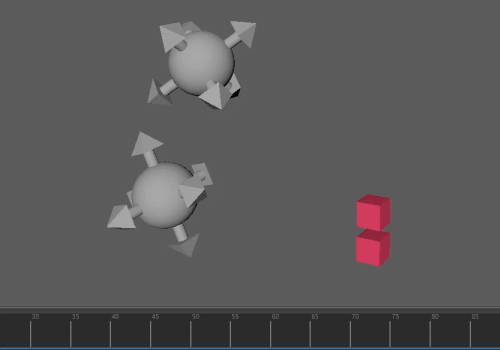
If you have a timeline selection, Schnapps will prompt you to ask whether you want to snap object(s) over time, on the frames you have highlighted.
If you answer Yes, then Schnapps will snap that object(s) on every frame you have highlighted.
This can be useful if you have keyframes on your object(s) and want to lock them down in space for the highlighted range or have them snap to an animated object over the highlighted range.
List A and List B
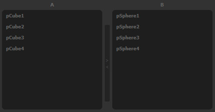
In the settings dialog for Multi Snap, you will see two list fields labeled A and B.
Both these fields display the objects loaded with the Load A and Load B buttons.
These objects are the will be used as the source objects (A) and the objects to snap (B).
The order of the objects in each list determines which object snaps to which. For example, the first object in list B will snap to the first object in list A, the second object in list B will snap to the second object in list A, and so on.
You can drag the objects around to reorder them, and this will adjust which objects are paired together from lists A and B.
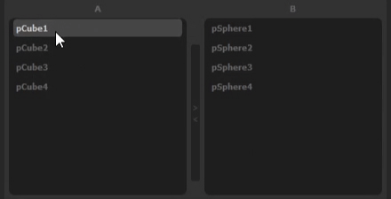
List A and B can be swapped by pressing the swap list button in between the list fields.
Both lists can be sorted with their respective Sort By Name buttons. Sorting by name can be useful in certain circumstances, such as snapping together similar rigs.
Translate Rotate Scale Checkboxes
Sets whether you want to snap the translate, rotate, and/or scale of list B objects.
Defaults:
Translate: On
Rotate: On
Scale: Off
World
Snap list B objects to list A objects using world space transform values.
Object
Copy and paste list A objects’ transform values onto list B objects.
Pivot
Snap list B objects to list A objects using the pivot positions of both.
Useful for when pivot positions are not the same as world space positions.
Center
Snap the center position of list B objects to the center position of list A objects.
Mesh
Snap objects in list B to the surface of objects in list A.
This operation will perform a world space snap for every list B object; snapping it to the surface of the paired object in list A.
List A objects must be a mesh for this operation.
Impossible
Attempt to do the impossible, and snap list B objects to list A objects that are frozen (an object that has had Freeze Transformations applied to it).
This operation is just an approximation. It works best on some-what symmetrical objects.